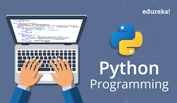

It is well known among programmers, that Python is one of the coolest languages in the world. It is also the best language for people who are just starting to learn programming because its easy syntax and built-in functionalities make the learner focus on the programming concepts instead of memorizing crazy hard syntax like C++. Because of that, Python is always ranked in the top 10 popular languagues. It's a general purpose and high level programming language. You can use python for so many things. For example, you can use it for developing desktop GUI applications, websites and even web applications by using frameworks such as Django.
You can do a lot of things with Python. It's mostly used for web development, data science and scripting. Let's talk about each of these topics.
There are two very popular and powerful web frameworks which are based on Python: Django and Flask. These two web frameworks help you create server-side code in Python. That's the code that you would eventually put on your server as opposed to on users' devices and browsers which is front-end. Django and Flask make it easier to build common backend logic. This includes mapping different URLs to chunks of Python code, dealing with databases, and generating HTML file users see on their browsers.
Data science is used a lot for machine learning, face recognition, voice recognition and many other purposes. There are two very popular machine learning libraies and frameworks for Python. They are called sclkit-learn and TensorFlow. Python is also very heavily used for data analysis and data visualisation. One of the most popular libraries for data visualization is called Matplotlib. It's avert good library to start with because it's easy to get started with and a lot of other libraries are based on Matplotlib, so once you learn it, you will be able to pick up other libraries very easily and quickly.
Scripting usually refers to writing small programs that are designed to automate simple tasks. Python is such a good language for this purpose. It's very quick and easy to write something small with it and test it. Python is suited for this type of task mainly because it has relatively simple syntax and is easy to write.
“What Exactly Can You Do with Python? Here Are Python's 3 Main Applications.” FreeCodeCamp.org, FreeCodeCamp.org, 15 June 2018, medium.freecodecamp.org/what-can-you-do-with-python-the-3-main-applications-518db9a68a78.